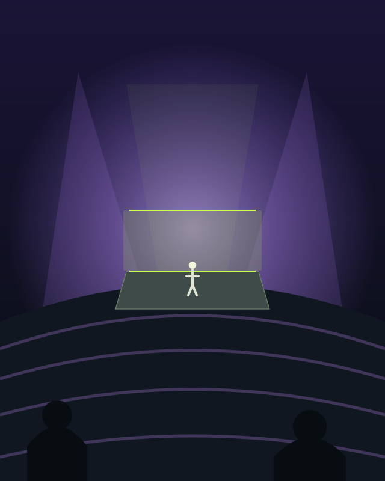
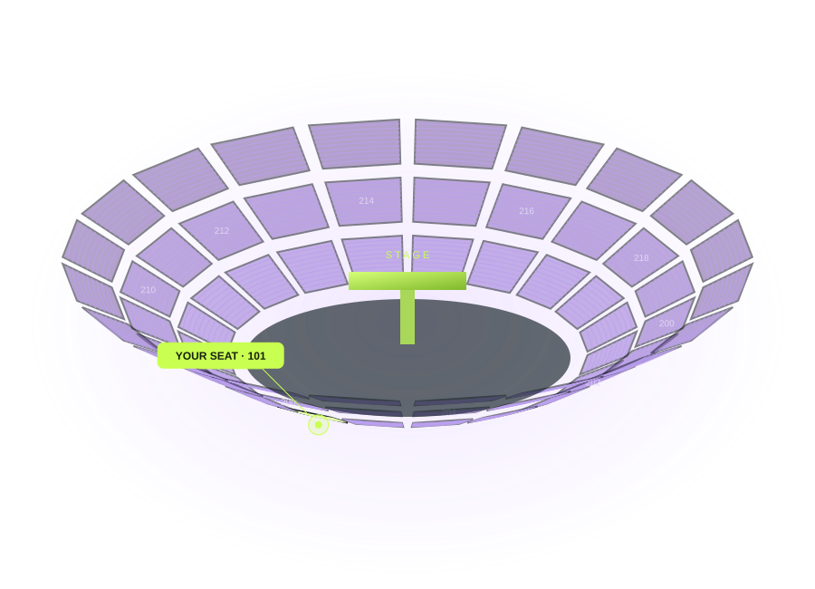
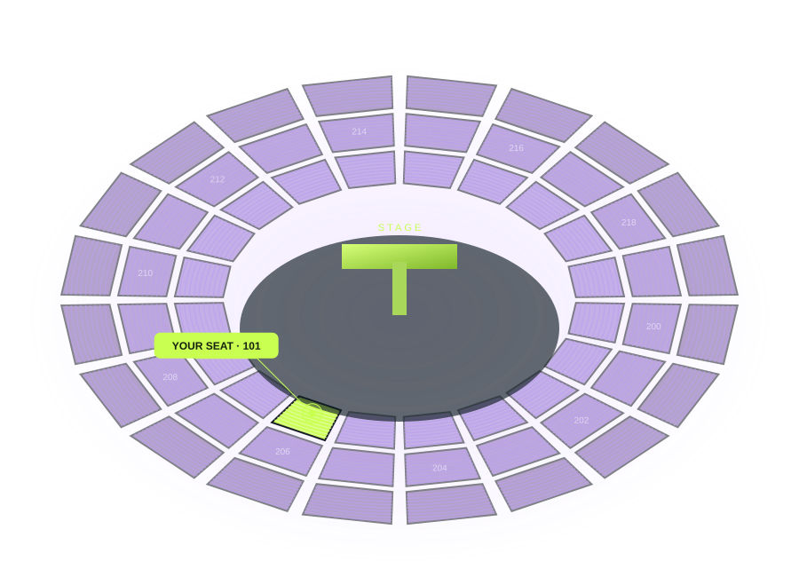

⌕ 选择国家 / 地区 找到场馆 ↗
选择场馆和演出
找到你要去的地方，查看已有的场次与布局。
StagePeek 是你的演唱会座位视角助手。
从一张门票出发，在 2D / 3D 场馆中找到位置，提前看看舞台。
精选 10 馆免费体验 · 浏览无需注册
正在加载鸟巢 3D…
看台参数模型 · 分区为示意，非官方实测 · 未含演出舞台
从平面图理解场馆与舞台方向
旋转、缩放，靠近你的分区
提前感受从座位望向舞台
切换放大倍率，比较画面大小
FROM YOUR SEAT
找到座位之后，切换到观众视角。试试不同放大倍率，提前感受镜头里的舞台。
手机取景与人物大小为几何示意，实际效果以场馆和演出校准状态为准。

FROM YOUR TICKET TO YOUR VIEW
门票上的区、排、座，是你探索现场的起点。
找到你要去的地方，查看已有的场次与布局。
对照票面填写位置；有来源记录时，可匹配到座位。

101 区 · 观众视角 ↗切换 2D / 3D 与观众视角，试试不同取景倍率。
不同场馆的数据覆盖不同。逐座位置以来源记录为准；实际舞台、封区和距离以当场演出及校准状态为准，视角模拟不等于现场照片。
先免费体验精选 10 个场馆，再决定是否探索更多。
StagePeek 把票面位置变成可探索的 2D / 3D 视角。
先选场馆，再看看从那个位置，舞台是什么样。
上方为交互流程演示。真实场馆请进入场馆探索，位置匹配以已有来源记录为准。
分层查看座位图，理解你的分区与舞台方向。
探索看台、切换观众视角，模拟手机取景。
FROM YOUR TICKET TO YOUR VIEW
门票上的区、排、座，是你探索现场的起点。
找到你要去的地方，查看已有的场次与布局。
对照票面填写位置；有来源记录时，可匹配到座位。
切换 2D / 3D 与观众视角，试试不同取景倍率。
不同场馆的数据覆盖不同。逐座位置以来源记录为准；实际舞台、封区和距离以当场演出及校准状态为准，视角模拟不等于现场照片。
先免费体验精选 10 个场馆，再决定是否探索更多。
StagePeek 是一个演唱会座位视角工具。帮你把抽象的票号，变成看得懂的场馆位置。
找到门票上的区、排和座号。
选场馆、选演出，再输入位置。

101 区 / A 排 / 78 座提前感受望向舞台的画面。
流程与画面为示意 · 免费体验精选 10 馆
MADE FOR THE MOMENT BEFORE
看懂位置、探索视角、试试取景。
在出发之前，对你的现场多一分了解。
2D 看区域，3D 看空间。上下层看台、舞台方向，在一个地方探索。
匹配已有来源座位记录；没有逐座数据时，清楚说明当前定位精度。
从观众视角出发，用不同倍率预览取景画面。距离仅在校准条件满足时提供。
不同场馆的数据覆盖不同。逐座位置以来源记录为准；实际舞台、封区和距离以当场演出及校准状态为准，视角模拟不等于现场照片。
先免费体验精选 10 个场馆，再决定是否探索更多。
StagePeek · 演唱会座位视角助手
找到场馆，在 2D / 3D 中探索分区与位置，提前感受你的现场视角。
没有匹配的示例场馆，试试其他名称或国家。
场馆卡片为目录样式示意，配图非对应场馆实景；点击进入现有工具，数据覆盖与访问权限以工具内状态为准。
YOUR TICKET, EXPLAINED
从平面图理解场馆与舞台方向
旋转、缩放，靠近你的分区
提前感受从座位望向舞台
切换放大倍率，比较画面大小
不同场馆的数据覆盖不同。逐座位置以来源记录为准；实际舞台、封区和距离以当场演出及校准状态为准，视角模拟不等于现场照片。
先免费体验精选 10 个场馆，再决定是否探索更多。
StagePeek 帮你提前探索演唱会座位视角与 3D 座位图。
找到门票对应的位置，看看舞台方向，再试试手机取景。
精选 10 馆免费体验 · 不用先注册
对照票面信息，在场馆中定位来源记录。
从 2D 分区到 3D 看台，提前探索现场。
切换放大倍率，预览镜头里的画面。
FROM PAPER TO PERSPECTIVE
左侧与手机画面为示意，具体功能与数据状态请以场馆内说明为准。
不同场馆的数据覆盖不同。逐座位置以来源记录为准；实际舞台、封区和距离以当场演出及校准状态为准，视角模拟不等于现场照片。
先免费体验精选 10 个场馆，再决定是否探索更多。